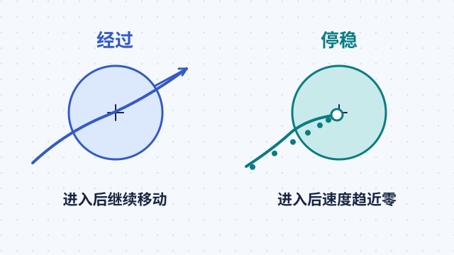
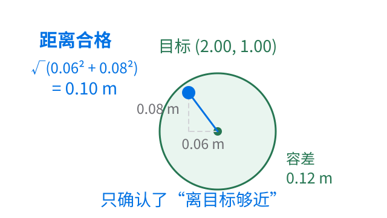
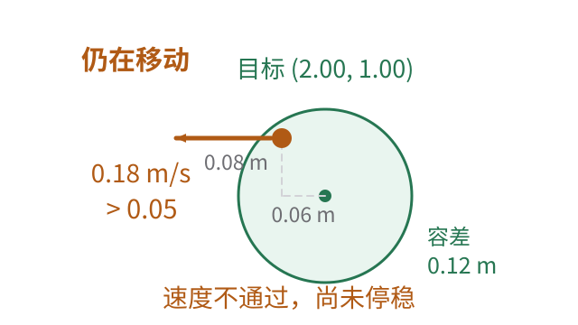
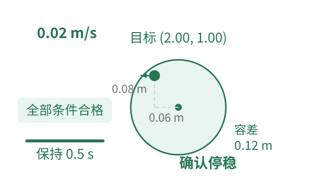

地图上的小点进了目标圈，机器人却可能仍在往前滑。若下一步要跟人交接物品，到达位置和停稳动作是两项不同的条件。设置判据之前，先决定任务究竟需要哪一种完成状态。
将“到达”写成可以测量的量
平面目标有位置和朝向。当前点到目标的直线距离可以描述位置误差，机体朝向与目标朝向之间的最短角差可以描述姿态误差。沿路线驶过目标时，距离可以短暂接近零，速度却很大。如果任务需要停下来，还要考察平移速度与角速度。
还应区分目标容差与测量不确定性。容差是任务允许离目标多远，测量不确定性描述你对当前位置有多大把握。把容差调得远小于定位本身的波动，会让状态来回切换。先让机器人静止，记录一小段位置、朝向和速度的波动，再讨论可稳定判定的阈值。
Nav2 的停止目标检查器在位置、朝向等目标条件以外还检查运动速度。实际使用时要看选用的插件及其参数。一个为巡航设置的容差，不一定适合定向停靠的场景。测量分辨率和定位抖动也决定了一个阈值能否被稳定判断。


按顺序代入一次数据
目标点在 (2.00,1.00) 米，某一时刻机器人位于 (1.94,1.08) 米。横向与纵向误差为 0.06 和 0.08 米，距离是两者平方和的平方根，即 0.10 米。若位置容差为 0.12 米，这一项通过。
假设目标朝向为 179°，当前为 −179°。在圆周上两者只差 2°，直接相减却会得到 358°。应先把角差折回最短转角。此时若平移速度仍为 0.18 米每秒，而这次验收约定低于 0.05 才算停稳，那么即使位置、朝向都已满足，也应继续观察。
上层任务还可以要求条件持续成立一段时间。以 10 Hz 采样为例，连续两次合格的观测只相隔约 0.1 秒，远不足以证明稳定了 0.5 秒。直接比较时间戳能避免丢帧时按样本数猜时间。这个附加窗口是任务的设计选择，不能从插件名称推断它自动存在。
进目标圈以后，还要看什么
把目标容差画成圆，先检查几何位置，再检查运动。示例阈值用于解释判据，不是所有机器人的通用配置。

进圈只通过位置条件
查看大图
机器人位于 (1.94,1.08) 米，图中蓝点与目标横向差 0.06 米、纵向差 0.08 米。距离是两者平方和开根号，得到 0.10 米，小于 0.12 米容差，所以确实进了绿色圆圈。但这个几何结论还没有包含方向、速度或停留时间。

还在移动就继续观察
查看大图
即使朝向差也只有 2°，假定当前线速度为 0.18 米每秒，而停稳阈值为 0.05 米每秒，速度条件仍不通过。橙色箭头表明机器人还在运动。对于需要停靠的任务，应继续等待；如果业务只要求经过目标，才可能采用不同的完成定义。

按时间确认稳定
查看大图
随后线速度降为 0.02 米每秒，角速度、位置和朝向也都满足任务条件。若这次业务还要求连续满足 0.5 秒，就从合格时刻开始计时，中途任一条件失效便重新等待。图里的小时间窗是额外的任务规则，不能因为选用了 Nav2 目标检查器就假定它自动存在。
到达由任务需要的条件共同决定。若需要时间窗口，按时间戳计算实际经过的时长，不能把两次合格观测等同于已经稳定半秒。
小练习：在 10 Hz 采样下，连续两次合格观测能证明保持 0.5 秒吗？
不能。相邻两次观测通常只相隔 0.1 秒。需要检查从首次合格到当前的实际时间，并确认期间没有条件失效。
全局坐标跳变也会跨进目标圈
机器人软件常令 odom 表示连续的短时运动，用 map 表示能接受全局修正的地图坐标。重定位或回环可以更新 map 到 odom 的变换。这样，即便机身短时间内几乎没动，显示在 map 坐标中的位置也可能跳进或跳出目标圈。
离线复盘时把目标和机体变到同一坐标系，再把对应时刻的变换、局部速度和“任务完成”记录放在一起。若地图位置一步跳到圈内，里程计却显示机器人还在持续前进，需检查全局修正与完成判据的时间关系。
对角度还要检查单位和参考轴。上位界面可能以度显示，控制器却使用弧度。5° 约为 0.087 弧度；若把 5 原样当作弧度容差，几乎所有方向都可能通过。把同一帧记录换算成相同单位再回放，才方便判断逻辑错误还是配置错误。
用相似但不同的轨迹检验
找两段输入，一段从目标附近驶过，另一段在目标附近减速、调整角度并停稳。对每帧列出位置误差、角差、线速度和角速度，标出第一次进入容差的时刻，以及最后满足所有条件的时刻。
第一段应能出现“位置条件通过但没有停稳”，第二段应在速度降下来之后完成。如果两段在第一次进圈时就完全相同地触发，优先检查到底哪一层决定了任务结束，速度条件是否真的接入了那个入口。